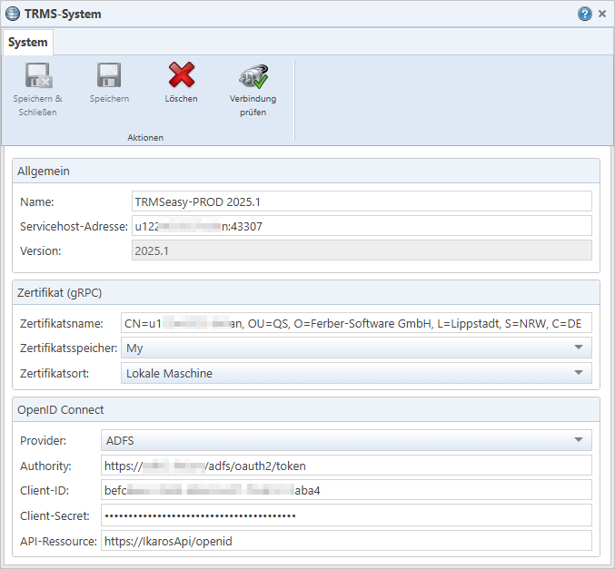

Textfeld „Name“: Der maximal 50
Zeichen lange Name für das TRMS-Zielsystem.
Textfeld „Name“: Der maximal 50
Zeichen lange Name für das TRMS-Zielsystem.
Abb. 38: Bearbeitungsdialog für ein TRMS-System
Textfeld „Name“: Der maximal 50
Zeichen lange Name für das TRMS-Zielsystem.
Textfeld „Servicehost-Adresse“:
Die Adresse des Anwendungs-Servers des Ziel-TRMS.
Textfeld „Version“: Zeigt
schreibgeschützt die IKAROS-Version des Ziel-TRMS an. Wird bei Ausführung von
„Verbindung prüfen“ automatisch gefüllt.
Die Dokumentation der „OpenID Connect“-Felder (wie „Provider“ oder „Client-ID“) finden Sie in der Dokumentation des Menüpunkts [Administration -> Services] in IKAROS (Kapitel-ID „fs_a8c663c5abe7“).
Schaltflächen
|
Symbol |
Schaltfläche |
Beschreibung |
|
|
„Speichern & Schließen“ [Strg] + [H] |
Speichert die Änderungen an den Systemverbindungsdaten und schließt den Dialog. Nur aktiv, wenn Änderungen vorliegen und „Verbindung prüfen“ erfolgreich ausgeführt wurde. |
|
|
„Speichern“ [Strg] + [S] |
Speichert die Änderungen an den Systemverbindungsdaten. Nur aktiv, wenn Änderungen vorliegen und „Verbindung prüfen“ erfolgreich ausgeführt wurde. |
|
|
„Löschen“ [Strg] + [D] |
Löscht die Systemverbindungsdaten nach der Bestätigung einer Sicherheitsabfrage dauerhaft aus der Datenbank des TRMS. Auf das tatsächliche TRMS-System, auf das diese Daten verweisen, hat das Löschen keinen Einfluss. Das Löschen ist nur möglich, wenn das System noch nicht in Changes, Change Sets oder Transportaufträgen eingetragen ist. |
|
|
„Verbindung prüfen“ [Strg] + [K] |
Ruft den Anmeldedialog auf, um sich an dem System testweise anzumelden und so die Verbindungsdaten zu überprüfen. „System“-Datensätze können erst gespeichert werden, wenn die Verbindungsprüfung erfolgreich war. |